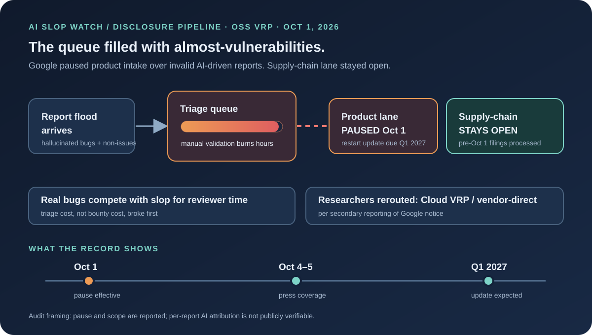
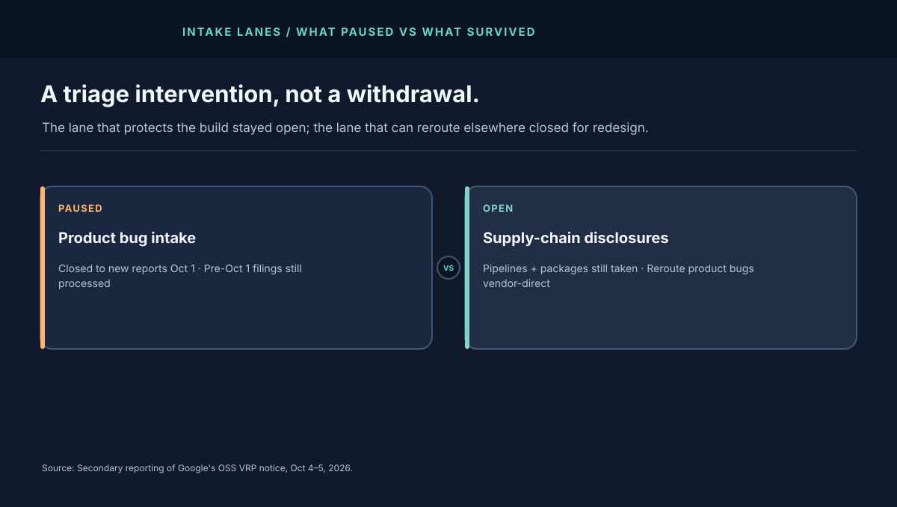

1. What Google Reportedly Paused — and What Survived
Three boundaries matter, and the coverage agrees on all three. First, the pause covers product vulnerability reports under the OSS VRP — flaws in Google's open-source products. Second, supply-chain submissions (compromised pipelines, tampered packages) remain open. Third, valid product submissions filed before Oct 1 continue to be processed. Researchers with product bugs were redirected toward other active bounty lanes, including Cloud VRP for some Google Cloud repos.
That shape is deliberate. Supply-chain disclosures protect the build itself; freezing them would blind the ecosystem. Product bugs, by contrast, can be rerouted to vendor-direct or adjacent programs while the intake machinery is rebuilt. The pause is a triage intervention, not a withdrawal from open-source security.
2. The Failure Mode: Almost-Vulnerabilities at Machine Speed
The reported mechanism deserves precision. These were not crude spam ("buy crypto"). They were plausible-looking filings — claimed bugs that dissolved on manual validation into hallucinations or non-security coding errors. Each one demanded what real reports demand: reproduction, code review, severity judgment. The cost of a false report is not zero; it is most of the cost of a true one, paid before the verdict.
That is why triage broke before bounties did. Payouts gate on validity; reviewer hours do not. When invalid volume rises faster than reviewer capacity, real disclosures queue behind fiction. Maintainers spend their days disproving bugs instead of fixing them. A pause that stops the inflow is, from the triage side, the only lever that works in days rather than quarters.
3. The Disclosure Pipeline Is a Queueing System
Think of the VRP as three stages: intake, validation, remediation. Intake is cheap and parallel. Remediation is expensive but rare — only valid, severe bugs reach it. Validation is the bottleneck: skilled, serial, and irreducible without proof standards. AI report generators attack exactly that bottleneck, because generating a plausible claim costs pennies while falsifying it costs hours.
The standard defenses all live at validation's door: mandatory proof-of-concept exploits, reproducible environments, researcher reputation thresholds, and structured report schemas that force falsifiable claims. Google reportedly plans to spend the hiatus redesigning its reporting framework — the right layer. Paying more per bug would not fix this; demanding more proof per bug might.
Security teams that used the OSS VRP product lane as a disclosure path should act now, not in Q1 2027: reroute product bugs to Cloud VRP or vendor-direct channels, keep supply-chain disclosures flowing through the surviving lane, and attach executable PoCs to every filing regardless of program. Proof is becoming the price of attention.

4. What a White-Hat Restart Looks Like
Rook grades bounty redesigns on five controls:
- Executable proof required. Reports without a runnable PoC or a failing test go to the back of the queue. Prose-only claims about memory safety or injection are triage requests, not disclosures.
- Reputation-weighted intake. Proven researchers skip the line; unknown submitters face stricter proof gates. Forgiving the person while hardening the proof preserves openness without preserving the flood.
- Machine-checkable first pass. Fuzzing harnesses, static-analysis gates, and sandbox replays should reject the obviously invalid before a human reads a word.
- Transparent disposition metrics. Publish intake volume, invalid share, median time-to-verdict, and time-to-fix separately. "Overwhelmed" is a feeling; the four numbers are a fact.
- Appeal paths for the falsely rejected. Stricter gates will bounce some real bugs from unfamiliar researchers. Every rejection needs evidence, a reason code, and a second look.
The adjacent shelf to study is supply-chain defense: the slopsquatting teardown shows what happens when AI invents the package you install, and the RubyGems prequel traces a registry flood that preceded this bounty flood. Different pipes, same pressure: machine-generated plausibility overwhelming human verification. The AI Slop Forensics course teaches the verification discipline directly.
5. Field Glossary: Eight Terms This Audit Teaches
Disclosure pipelines have their own dialect. Eight terms, each tied to the reported pause:
| Term | What it means here | Why it mattered on Oct 1 |
|---|---|---|
| VRP (Vulnerability Reward Program) | A bounty pipeline paying researchers for valid flaw reports. | The OSS VRP's product lane is the paused pipeline. |
| Product vs supply-chain lane | Flaws in products vs compromise of builds and packages. | Only the product lane paused; the build-protecting lane survived. |
| Proof-of-concept (PoC) | Runnable evidence a claimed flaw is real and reachable. | The missing item in slop filings — and the likely restart requirement. |
| Triage | Validating, reproducing, and severity-judging incoming reports. | The bottleneck that broke: skilled, serial, irreducible without proof standards. |
| Hallucinated vulnerability | A confident, plausible, entirely unreal bug claim. | Costs almost as much to disprove as a real bug costs to confirm. |
| Invalid share | Fraction of intake that dissolves on validation. | The metric Google has not published — watch for it in the Q1 2027 update. |
| Disposition metrics | Intake volume, invalid share, time-to-verdict, time-to-fix. | "Overwhelmed" is a feeling; these four numbers are a fact. |
| Reputation-weighted intake | Stricter proof gates for unknown submitters, faster lanes for proven ones. | The likely shape of the restart — forgive the person, harden the proof. |
6. Auditor Playbook: How to Verify a Bounty-Pause Story Yourself
Rook's method for pipeline stories, reproducible by any reader:
- Separate the pause from the reason. Confirm date, scope, surviving lanes, and restart timeline from program pages and notices first. The reason ("AI-driven invalid volume") is a claim about motive and mechanism — grade it separately from the fact of the pause.
- Demand denominators. "Influx" means nothing without baseline intake, invalid share, and reviewer headcount. If the numbers are absent, say so and cap the claim at "reportedly."
- Check the surviving lanes. A pause that keeps supply-chain intake open is triage surgery; one that closes everything is withdrawal. The scope reveals the diagnosis.
- Test per-report attribution. No public dataset ties any individual rejected filing to AI generation. Without it, "AI slop flood" describes the stated pressure, not a measured composition. Never launder a stated reason into a counted fact.
- Watch the restart terms, not the press cycle. Proof-of-concept mandates, reputation thresholds, machine pre-checks, disposition metrics — the Q1 2027 terms are the story's second half. Calendar it.
Run the same five steps on the next "AI broke the queue" headline — bounty, CVE feed, app store, or grant portal. The pipelines differ; the verification does not. The AI Slop Forensics course systematizes exactly this discipline.
Appendix A. Worked Comparison: Three Queues, One Pressure
Careful framing: only the VRP pause is audited here; the other two are reported context from the same coverage, included to show the pattern, not to assert shared causation. Read down the columns and watch the bottleneck stay fixed while everything else moves.
| Queue | What flooded it (as reported) | Bottleneck hit | Response (as reported) |
|---|---|---|---|
| Google OSS VRP product lane | Invalid AI-driven vuln reports | Manual validation hours | Intake paused Oct 1; redesign; Q1 2027 update |
| Linux CVE intake | Bogus CVE submissions near 2,000 per release | Maintainer review bandwidth | Legacy network-driver support dropped |
| Intel bounty program | Unstated; analysts point at slop load | Triage economics (inferred, not confirmed) | Program suspended; payouts to $100k ended |
Three differences matter more than the similarity. First, only Google named AI-driven invalid volume as the reason; Intel did not, and analyst attribution is not evidence. Second, only Google kept a lane open — the supply-chain path — which is why this audit calls it triage surgery rather than withdrawal. Third, only the VRP case has a dated restart expectation, which makes it the one to watch: if Q1 2027 brings PoC mandates and reputation gates, expect HackerOne-hosted programs to mirror the template within a quarter, and expect the copycats to be announced as "quality improvements" rather than "slop defenses." Audits of those announcements should reuse §6's five steps verbatim.
The through-line for defenders: generation cost is collapsing toward zero while verification cost stands still. Every pipeline whose intake is cheaper than its validation — bounties, CVE feeds, app stores, grant portals, hiring queues — now carries this exact flood shape. The fix is never "read faster." It is proof at intake, machines before humans, and published disposition math.
Appendix B. Objections, Answered
"You're defending a closed bounty." No — the audit defends the distinction between pausing one lane and abandoning disclosure. Supply-chain intake stayed open, pre-October filings still process, and researchers got reroute guidance. Grade the restart terms in Q1 2027; until then the record shows surgery, not surrender.
"AI-written reports can still be valid." True and beside the point. Validity is decided by executable proof, not by authorship. A machine-found bug with a runnable PoC is a disclosure; a human-filed hunch without one is a triage request. Proof-gated intake is authorship-neutral — which is exactly why it is the white-hat answer.
"Stricter gates hurt unknown researchers." They can, which is why Appendix B of the main audit demands appeal paths with reason codes and second looks. The alternative — open intake that drowns — hurts unknown researchers more, by burying their real finds behind fiction. Queues are also gatekeepers; pick the gate you can audit.
"Why not just hire more triagers?" Because validation cost scales with submissions while submissions now scale with generation — a race headcount cannot win. Machines must reject the obviously invalid before humans read a word; headcount then covers the genuinely ambiguous remainder. Hiring into an ungated flood is pouring concrete into the river.
Appendix C. Deep Dive: The Validator's Hour — What One Report Really Costs
Follow a single plausible-looking filing through triage and the pause explains itself. Times are modeled for a mid-severity claim; the shape generalizes.
Minutes 0–10: intake and dedup. Is this a duplicate of a known issue, a previously rejected claim, or last week's slop with new wording? Against a flood, even this step drowns: near-duplicate AI filings cluster around the same files and functions, and clustering them correctly is itself skilled work. Ungated intake pays ten minutes per filing before any security judgment exists.
Minutes 10–40: reproduction attempt. The reviewer builds the environment, applies the claimed trigger, and watches. For a real bug this converges; for a hallucination it diverges slowly — the tool output almost matches, the path almost exists, the version almost matters. "Almost" is the most expensive word in triage: each near-miss demands another half hour to rule out rather than a minute to dismiss. Slop is optimized, accidentally or not, for maximum almost.
Minutes 40–60: severity and scope. Even a confirmed oddity needs exploitability judgment: reachable by whom, under what configuration, with what impact. A coding error with no security boundary crossed must be documented as such — politely, because today's invalid reporter is tomorrow's valid one. The disposition note, the severity rationale, the response: another twenty minutes of careful writing per dead end.
At one modeled hour per invalid filing, a hundred slop reports a week consume two and a half full-time reviewers who fix nothing. That is the arithmetic behind "overwhelmed," and it also specifies the cure precisely. A proof ladder prices each rung: prose-only claims wait in the slow lane; reports with failing tests jump ahead; containerized reproductions that run with one command go first. Machine pre-checks — dedup clustering, static-analysis gates, sandbox replay harnesses — reject the obviously invalid before human eyes. And a disposition dashboard (intake volume, invalid share, median time-to-verdict, time-to-fix) turns "flooded" from a feeling into a number the program can manage. None of this judges authorship; all of it prices proof. Which is why it works against floods of any origin — human, machine, or bored teenager.
Appendix D. The Restart Memo: What Rook Would Write to Google
If the Q1 2027 redesign asked this desk for terms, the memo would fit on one page. It has four tiers, three SLAs, and one dashboard — each auditable from outside.
Tier 1 — Executable lane (fast). Reports arriving with a containerized reproduction that runs one command and demonstrates impact skip the queue: machine replay first, human severity judgment within five business days. This lane rewards the behavior the ecosystem needs and makes proof profitable to produce.
Tier 2 — Script lane (standard). Reports with a failing test or standalone script get machine pre-checks (dedup clustering, static-analysis gates, sandbox replay) then human review within fifteen business days. Most legitimate independent research lands here; the pre-checks must be published so submitters can self-screen before filing.
Tier 3 — Prose lane (slow, capped). Prose-only claims are accepted but explicitly queued behind Tiers 1–2 with a published cap per researcher per quarter. The cap is the anti-flood device: it bounds any single source's drain on reviewers without closing the door that unknown researchers walk through. Every rejection carries a reason code, the missing proof specified, and a one-click path to refile in a higher tier.
The three SLAs: time-to-first-verdict published per tier (not averaged across them — averages hide the slow lane); invalid-share and intake volume published monthly (the flood quantified, so the next pause never needs to surprise anyone); and median time-to-fix for confirmed bugs tracked separately from triage times (so validation speed and remediation speed cannot mask each other).
The one dashboard shows all of it plus researcher reputation distributions — proving the gates admit newcomers rather than entrenching incumbents. A restart that only incumbents can pass is a guild, not a bounty. Grade Q1 2027 against this memo: tiers with teeth, SLAs per tier, public flood math, and an appeal path with reason codes. Anything less is a reopening, not a redesign. And twelve months later, success has exactly one measure: disposition math moving in the right direction — invalid share falling while valid finds hold steady and newcomer acceptance stays open. If those three curves bend together, proof-gating worked; if only volume fell, the program merely shrank its inbox. Demand the curves, not the press release.
7. The Verdict
The public record supports a narrow, serious claim: Google paused one intake lane because validation economics failed under reported AI-driven invalid volume, while keeping the lanes that protect the build itself. It does not support broad claims about which reports were AI-made, how many there were, or whether sibling program pauses share the same cause. Watch the Q1 2027 restart terms — proof requirements, reputation gates, machine pre-checks — because whatever Google demands, the rest of the bounty ecosystem will copy within a quarter.
The bugs were free to file and the truth was expensive to check. What to watch next: the Q1 2027 restart terms graded against Appendix D's memo, the first program that copies Google's proof gates (watch for "quality improvements" language), and your own intake economics — if your project accepts prose-only security claims today, its triage queue already carries this flood's shape. The generators are not slowing down; the only variable is whether validation gets priced before the next pause.
The bugs were free to file. The truth was expensive to check.
Sources and Method
Pause date, scope, surviving lanes, stated reason, and Q1 2027 update expectation are attributed to secondary reporting of Google's notice. Rook did not access Google's internal counts, the X announcement directly, or any individual report. Linux and Intel context is reported context from the same coverage, not independently verified here.